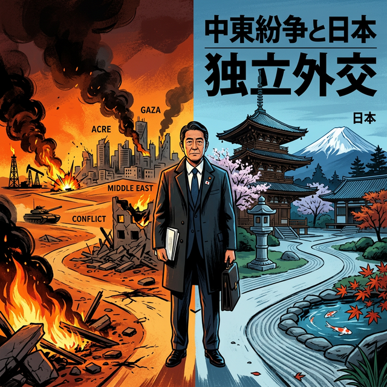

中東の炎上と日本の矜持――高市首相に問われる「自主外交」の継承

2026年2月28日、世界は再び戦慄の渦に叩き込まれました。イスラエル軍と米軍が、核開発協議の継続中であったにもかかわらずイランへの軍事攻撃を強行したのです。この国際秩序を揺るがす「暴挙」を前に、間もなく訪米する日本のリーダー、高市首相に突きつけられているのは、同盟国としての義務か、あるいは国家としての自主独立かという極めて重い問いです。
1. 歴史の構造：日章丸が拓いた「信頼」の航路
技術的・構造的視点からこの問題を捉え直すと、日本のエネルギー安全保障は常に中東の地政学的な安定という「生命線」の上に設計されてきました。かつて1953年、英国の軍事威嚇を突いてイランの石油を運んだ「日章丸事件」は、単なる輸送技術の勝利ではなく、大国の利権構造に風穴を開ける構造的な自主外交の先駆けでした。この時、日本が示した「リスクを背負ってでもパートナーを守る」という姿勢こそが、その後の親日感情の技術的基盤（土台）となったのです。
2. 個人の体験：先人の労苦と「飛び跳ねる」ことの軽薄さ
個人的・人間的な視点に立てば、外交とは血の通った「信義」の積み重ねに他なりません。パレスチナ国旗の国連掲揚を巡り、欧米諸国が反対する中で賛成に回った当時の外交官たちの決断、あるいは砂漠の地で信頼を勝ち得てきた先人たちの労苦。それらを思うとき、トランプ大統領の傍らでただ満面の笑みを浮かべ、無邪気に喜びを表現するような軽薄な態度は、先人の顔に泥を塗る行為に等しいと言えるでしょう。高市首相には、一人の政治家として、その歴史の重みを背負った「個」の覚悟が求められています。
3. 社会的視点：従属を越えた「真のパートナーシップ」
社会的・システム的な側面において、日本社会は今、米国への過度な追従システムからの脱却を静かに求めています。軍事力による威嚇が常態化する世界システムの中で、日本が果たすべき役割は、対等な立場で「物申す」ことができる強靭な外交能力の構築です。米国に従属しながらも、独自の回路で中東諸国とのパイプを維持してきた「二層構造」の外交術を、いかにしてこの激動の時代に再定義するのか。それは高市政権のみならず、我々日本国民全体の国際的地位を左右する分岐点となるはずです。
訪米の際、高市首相がトランプ大統領の隣で見せるべきは、追従の笑みではなく、先人が築いた自主外交の孤塁を守り抜こうとする、静かなる意志の表情であるべきです。